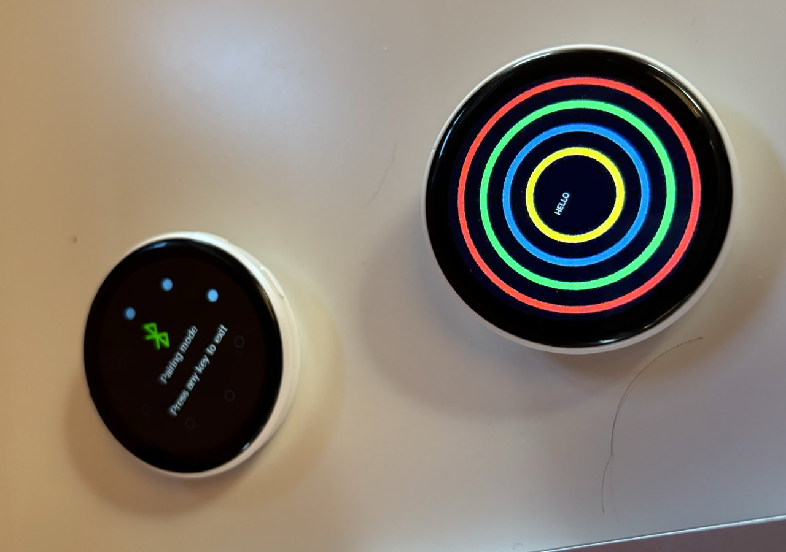
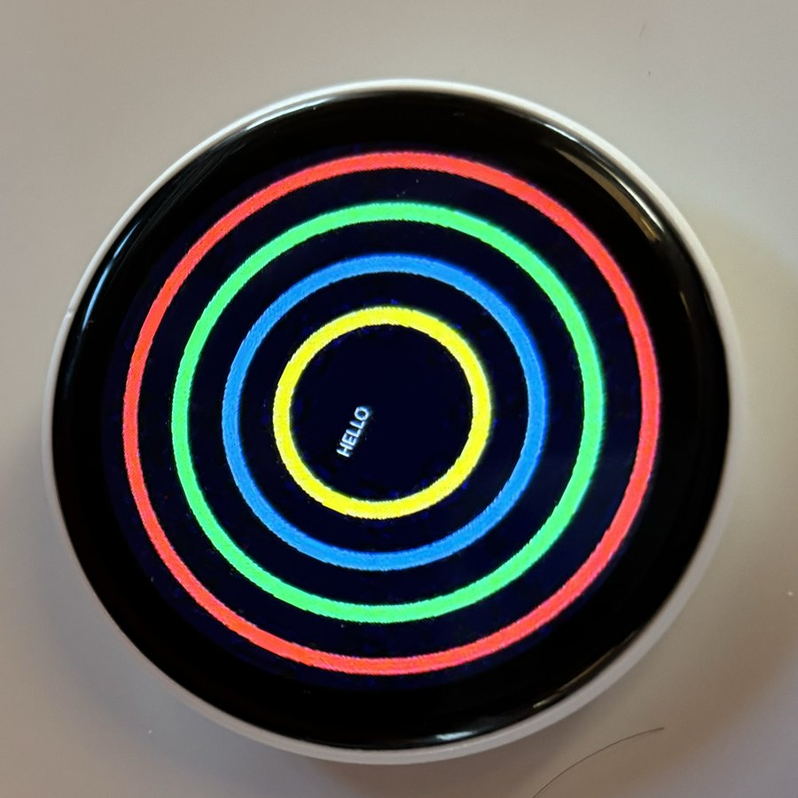
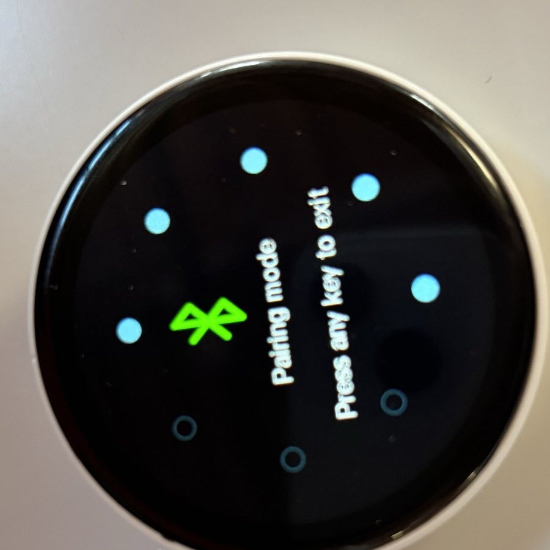

A clean Python client for the round E-Badge E87 Bluetooth pin — the one that normally only talks to its own app. Push images, GIFs, slideshows and scrolling text to the 368 × 368 screen in a few lines of code.
The E87 is a round 368 × 368 LCD badge — sold generically for anime and cosplay fans, normally locked to its own phone app. This library talks to it directly over Bluetooth. Below: two of ours, photographed running code from this repo.



Sold under many names as the “E87” badge — Amazon, AliExpress, and others. This project is an independent, reverse-engineered client; it isn’t affiliated with any seller.
Connect over BLE, run the JieLi mutual-auth handshake, and send anything to the round display.
JPEG or PNG, auto-fit and encoded to the badge's 368² round screen.
Render any string centred on the display, at the size and colour you choose.
Stitch multiple images into a looping MJPG animation, on-device.
Drop in a GIF; it's transcoded and looped on the badge automatically.
Scrolling text in any colour — the classic bullet-comment look.
A switch-by-reference command exists — but the firmware we tested rejects it. The honest story →
pip install to glowing in under a minute.No SDK, no app, no account. Discover the badge, connect, and send. The same E87Client works from a script, a daemon, or Home Assistant.
import asyncio
from e87_badge import E87Client
async def main():
async with E87Client("46:8B:00:01:83:9C") as badge:
await badge.send_text("Hello", size=96)
await badge.send_gif("pulse.gif")
asyncio.run(main())$ e87 discover
46:8B:00:01:83:9C E87
$ e87 image photo.png
$ e87 danmaku "Welcome!" --fg redUploading is slow — 5–15 s for a still. The device's own SDK has a command to flip between assets you've already sent, with no re-upload. So we implemented it… then tested it on real hardware. On firmware V11.1.0.3 the badge rejects it.
async with E87Client(addr) as badge:
# upload each asset once — returns its on-device path
idle = await badge.send_gif("idle.gif")
active = await badge.send_gif("active.gif")
async for present in presence(): # your sensor
await badge.show_file(active if present else idle)
# ↑ raises E87ProtocolError on V11.1.0.3 — wrap + re-uploadThe badge accepts the command at the transport layer, then answers with RCSP status 0x02: the “watch dial” subsystem this needs isn't wired up in the display-badge firmware, so it always shows the most-recently-uploaded file. (Curiously, file-browse is accepted — the filesystem is enumerable; there's just no “show this one.”)
e87 probe checks any unit by reading the status byte, and show_file() raises E87ProtocolError so your code falls back to a normal upload automatically. Read the full investigation →
The protocol was recovered from BLE captures and a decompiled APK, then re-implemented in clean Python — FE framing, the JieLi auth cipher, the windowed upload state machine, and the newly-found switch commands. It's all written down.
# SET_USING_DIAL — display a stored file
FE DC BA C0 1A .. sn 03 01 <path> EF
│ │ │ │ └ flag 01 = set
│ │ │ └─── op 03 = dial action
│ └ cmd 0x1A (RCSP ExternalFlash)
└─── flag C0 = commandInstall the client, point it at a badge, and start shipping pixels.